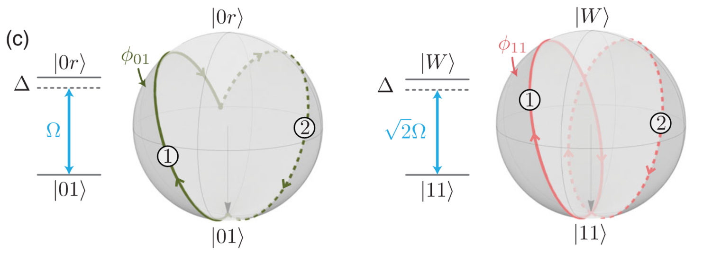

Hamiltonian in a 3-level system
The Hamiltonian in a 3-level system is similar to a 2-level system. It also consists of Rabi terms, detuning terms, and Rydberg interaction between atoms but with more levels. The convention we used for a 3-level system Hamiltonian is
\[i \hbar \dfrac{\partial}{\partial t} | \psi \rangle = \hat{\mathcal{H}}(t) | \psi \rangle, \\ \begin{aligned} \frac{\mathcal{H}(t)}{\hbar} = & \sum_i \frac{\Omega_i^{\mathrm{hf}}(t)}{2}\left(e^{i \phi_i^{\mathrm{hf}}(t)}|0_i\rangle\langle 1_i|+e^{-i \phi_i^{\mathrm{hf}}(t)}| 1_i\rangle\langle 0_i|\right)-\sum_i \Delta_i^{\mathrm{hf}}(t)|1_i\rangle\langle 1_i| \\ & +\sum_i \frac{\Omega_i^{\mathrm{r}}(t)}{2}\left(e^{i \phi_i^{\mathrm{r}}(t)}|1_i\rangle\langle r_i|+e^{-i \phi_i^{\mathrm{r}}(t)}| r_i\rangle\langle 1_i|\right)-\sum_i\left[\Delta_i^{\mathrm{hf}}(t)+\Delta_i^{\mathrm{r}}(t)\right]\left|r_i\right\rangle\left\langle r_i\right| \\ & +\sum_{i<j} V_{i j}\left|r_i\right\rangle\left\langle r_i|\otimes| r_j\right\rangle\left\langle r_j\right| . \end{aligned}\]
Here, $|0\rangle$ and $|1\rangle$ represent two different hyperfine levels in a atom. And $|r\rangle$ represent the Rydberg level we use for entangling different atoms. There are two seperated pulses: the first one couples two hyperfine levels $|0\rangle$ and $|1\rangle$ and the second couples the hyperfine level $|1\rangle$ and the Rydberg level $|r\rangle$. We use two different superscripts $\mathrm{hf}$ and $\mathrm{r}$ to indicate them respectively.
With ArrayReg in YaoArrayRegister, we use $|0\rangle$, $|1\rangle$, and $|2\rangle$ to represent $|0\rangle$, $|1\rangle$, and $|r\rangle$, respectively.
Interface for the 3-level Hamiltonian
The interface for defining a 3-level Rydberg Hamiltonian is rydberg_h_3. It is similar as the 2-level interface rydberg_h. The only difference is that, in 3-level you need to specify the Rabi term $(\Omega, \phi)$ and the detunning term $(\Delta)$ for both hyperfine coupling $(\Omega^{\mathrm{hf}}, \phi^{\mathrm{hf}}, \Delta^{\mathrm{hf}})$ and rydberg coupling $(\Omega^{\mathrm{r}}, \phi^{\mathrm{r}}, \Delta^{\mathrm{r}})$. And both time-dependent and site-dependent waveforms are supported for each parameter (see Hamiltonians for details about defining different waveforms).
Pulse sequences and quantum gates
We can use two hyperfine levels to represent a qubit. In this case single-qubit gates can be directly obtained using hyperfine coupling in the 3-level system, and two-qubit gates can also be implemented by the coupling between $|1\rangle$ and $|r\rangle$ with the assist of Rydberg interation between different Rydberg atoms. In general, any n-qubit unitary can be approximated by a 3-level Rydberg pulse sequence. Hence, the 3-level Rydberg system is universal for qubit quantum computation.
Single-qubit gates
Here is an example for applying a Pauli $X$ gate (acting on hyperfine levels $|0\rangle$ and $|1\rangle$) to each site. Notes that single qubit gates could be parallelize, that is implementing the same single qubit gate on different sites with only one pulse.
julia> using Bloqadejulia> atoms = generate_sites(ChainLattice(), 5, scale=5)5-element AtomList{1, Float64}: (0.0,) (5.0,) (10.0,) (15.0,) (20.0,)julia> h = rydberg_h_3(atoms; Ω_hf = 1.0)nqudits: 5 + ├─ [+] ∑ 2π ⋅ 8.627e5.0/|x_i-x_j|^6 n^r_i n^r_j └─ [+] 2π ⋅ 0.0796 ⋅ ∑ σ^{x,hf}_ijulia> reg = zero_state(5; nlevel = 3); # the initial state is an all-zero statejulia> prob = KrylovEvolution(reg, 0.0:1e-2:pi, h); # an X gate is a π-pulsejulia> emulate!(prob);julia> measure(reg) # the final state is an all-one state1-element Vector{BitBasis.DitStr64{3, 5}}: 11111 ₍₃₎
Two-qubit gates
Two-qubit gates can be implemented with the assist of Rydberg interaction between two atoms. Here we give two example of different implementation of the CZ-gate using the 3-level Rydberg system.
- 5-pulse CZ-gate
- The Levine-Pichler gate
Notes that the gate set of arbitrary single-qubit gate + CZ-gate is universal. Hence, 3-level Rydberg system is universal for quantum computing.
5-pulse CZ-gate
Suppose we have two atoms which are cloesed to each other so that there is Rydberg blockade between them. And the first atom is the controlling qubit while the second atom is the target qubit.
julia> using Bloqadejulia> atoms = generate_sites(ChainLattice(), 2; scale = 4)2-element AtomList{1, Float64}: (0.0,) (4.0,)
There are 5 steps in total for the CZ-gate.
- Apply an X-gate (hyperfine π-pulse) on each qubit to flip $|0\rangle$ and $|1\rangle$
- Apply an Rydberg π-pulse on the controlling qubit
- Apply an Rydberg 2π-pulse on the target qubit
- Apply an Rydberg π-pulse on the controlling qubit
- Apply an X-gate (hyperfine π-pulse) on each qubit to flip $|0\rangle$ and $|1\rangle$
To understand the above steps, let us consider two different cases when the controlling qubit starts with $|0\rangle$ and $|1\rangle$.
- If the controlling qubit starts with $|0\rangle$, then after step 2 it will be
excited into the Rydberg state $|r\rangle$. Because of the Rydberg blockade, the pulse in step 3 act trivially but a global phase -1 onto the target qubit. This means nothing changes but a global phase -1 if controlling qubit is $|0\rangle$.
- If the controlling qubit is started with $|1\rangle$, then after step 2 it will
become the hyperfine state $|0\rangle$ which will not affect the pulse in step 3. In this case, the 2π-pulse will cause a phase -1 only if the target qubit is $|1\rangle$ after step 2 (which means the target qubit starts with $|0\rangle$). This means a Z-gate upto a global phase -1 is applied on the target qubit when the controlling qubit is $|1\rangle$.
The following codes implement the above 5-steps of the CZ-gate.
julia> using Bloqadejulia> using Yaojulia> atoms = generate_sites(ChainLattice(), 2; scale = 4)2-element AtomList{1, Float64}: (0.0,) (4.0,)julia> st = zeros(ComplexF64, 9); st[[1, 2, 4, 5]] .= 1/2; # [1, 2, 4, 5] are indices for hyperfine statesjulia> reg = arrayreg(st; nlevel = 3) # initialize the state with 1/2 (|00⟩ + |01⟩ + |10⟩ + |11⟩)ArrayReg{3, ComplexF64, Array...} active qudits: 2/2 nlevel: 3julia> hs = [ rydberg_h_3(atoms; Ω_hf = [1.0, 1.0]), # hyperfine pulse for step 1 rydberg_h_3(atoms; Ω_r = [1.0, 0.0]), # Rydberg pulse for step 2 rydberg_h_3(atoms; Ω_r = [0.0, 1.0]), # Rydberg pulse for step 3 rydberg_h_3(atoms; Ω_r = [1.0, 0.0]), # Rydberg pulse for step 4 rydberg_h_3(atoms; Ω_hf = [1.0, 1.0]), # hyperfine pulse for step 5 ] # Hamiltonians for step 1-55-element Vector{RydbergHamiltonian3}: nqudits: 2 + ├─ [+] ∑ 2π ⋅ 8.627e5.0/|x_i-x_j|^6 n^r_i n^r_j └─ [+] ∑ Ω_i ⋅ σ^{x,hf}_i nqudits: 2 + ├─ [+] ∑ 2π ⋅ 8.627e5.0/|x_i-x_j|^6 n^r_i n^r_j └─ [+] ∑ Ω_i ⋅ σ^{x,r}_i nqudits: 2 + ├─ [+] ∑ 2π ⋅ 8.627e5.0/|x_i-x_j|^6 n^r_i n^r_j └─ [+] ∑ Ω_i ⋅ σ^{x,r}_i nqudits: 2 + ├─ [+] ∑ 2π ⋅ 8.627e5.0/|x_i-x_j|^6 n^r_i n^r_j └─ [+] ∑ Ω_i ⋅ σ^{x,r}_i nqudits: 2 + ├─ [+] ∑ 2π ⋅ 8.627e5.0/|x_i-x_j|^6 n^r_i n^r_j └─ [+] ∑ Ω_i ⋅ σ^{x,hf}_ijulia> ts = [π, π, 2π, π, π] # pulse time for step 1-55-element Vector{Float64}: 3.141592653589793 3.141592653589793 6.283185307179586 3.141592653589793 3.141592653589793julia> step = 1e-3; # Krylov time stepjulia> for i = 1:5 prob = KrylovEvolution(reg, 0.0:step:ts[i], hs[i]) emulate!(prob) endjulia> state(reg)[1, 2, 4, 5] # equivalent to 1/2 (|00⟩ + |01⟩ + |10⟩ - |11⟩)ERROR: BoundsError: attempt to access 9×1 Matrix{ComplexF64} at index [1, 2, 4, 5]
The Levine-Pichler gate
A more efficient way to implementing the CZ-gate is using the Levine-Pichler gate. Comparing to the above 5-pulse CZ-gate, the Levine-Pichler gate uses shorter sequence and less time.
Consider two atoms which are closed to each other. If we apply a pulse that couples $|1\rangle$ and $|r\rangle$ with the Rabi frequency $\Omega^\mathrm{r}$, detunning $\Delta^\mathrm{r}$, and duration $\tau$, then the dynamics of four hyperfine state are different.
- $|00\rangle$ will not change during the pulse
- $|01\rangle$ ($|10\rangle$) will oscillate between $|01\rangle$ and $|0r\rangle$ ($|10\rangle$ and $|r0\rangle$) with a frequency $\Omega^\mathrm{r}$
- $|11\rangle$ will oscillate between $|11\rangle$ and $|w\rangle = \frac{1}{2}\left( |1r\rangle + |r1\rangle \right)$ with a frequency $\sqrt{2}\Omega^\mathrm{r}$ (this is an approximation when the Rydberg blockade is strong enough such that the population of $|rr\rangle$ could be ignored)
The Levine-Pichler gate consists of two global pulses. Together with a global hyperfine pulse for rotation-Z gates, we will get a CZ-gate.
- A global Rydberg pulse with parameters $\frac{\Delta^\mathrm{r}}{\Omega^\mathrm{r}} \approx 0.377371$, $\phi^\mathrm{r} = 0$, $\Omega^\mathrm{r}\tau \approx 4.29268$
- A global Rydberg pulse with parameters $\frac{\Delta^\mathrm{r}}{\Omega^\mathrm{r}} \approx 0.377371$, $\phi^\mathrm{r} \approx 3.90242$, $\Omega^\mathrm{r}\tau \approx 4.29268$
- A global hyperfine pulse with parameters $\Delta^\mathrm{r}\tau = 2\pi - \alpha \approx 3.90242$, $\Omega^\mathrm{r} = \phi^\mathrm{r} = 0$
The first pulse completes a full cycle of oscillation for $|11\rangle$ while it does not complete a cycle for $|01\rangle$ and $|10\rangle$. The only difference between the first and the second pulse is the parameter $\phi^\mathrm{r}$. This difference causes a change of the rotation axis on the Bloch sphere, such that the second pulse completes another full cycle of oscillation for $|11\rangle$ while it also brings back $|01\rangle$ and $|10\rangle$. After these two pulses has a unitary representation
\[\begin{pmatrix} 1 & & & \\ & e^{i\alpha} & & \\ & & e^{i\alpha} & \\ & & & e^{i(2\alpha-\pi)} \end{pmatrix},\]
which is a CZ-gate with single qubit rotation gates $R_Z(\alpha)$ on each qubit. The following picture (Fig 2 c) in the original paper) demonstrates the process of the first pulse and the second pulse. 
Here are codes for the Levine-Pichler gate.
julia> using Bloqadejulia> using Yaojulia> st = zeros(ComplexF64, 9); st[[1, 2, 4, 5]] .= 1/2; # [1, 2, 4, 5] are indices for hyperfine statesjulia> reg = arrayreg(st; nlevel = 3); # initialize the state with 1/2 (|00⟩ + |01⟩ + |10⟩ + |11⟩)julia> atoms = generate_sites(ChainLattice(), 2; scale = 4);julia> Ω_r = 1.0; ϕ_r = 3.90242; Δ_r = 0.377371*Ω_r; # define parametersjulia> τ = 4.29268/Ω_r; α = 2.38076; # define pulse durationsjulia> step = 1e-3; # Krylov stepjulia> hs = [ rydberg_h_3(atoms; Ω_r = Ω_r, Δ_r = Δ_r), # global Rydberg pulse for step 1 rydberg_h_3(atoms; Ω_r = Ω_r, ϕ_r = ϕ_r, Δ_r = Δ_r), # global Rydberg pulse for step 2 rydberg_h_3(atoms; Δ_hf = 1.0), # global hyperfine pulse for R_Z-gate in step 3 ]3-element Vector{RydbergHamiltonian3}: nqudits: 2 + ├─ [+] ∑ 2π ⋅ 8.627e5.0/|x_i-x_j|^6 n^r_i n^r_j ├─ [+] 2π ⋅ 0.0796 ⋅ ∑ σ^{x,r}_i └─ [-] 2π ⋅ 0.0601 ⋅ ∑ n^r_i nqudits: 2 + ├─ [+] ∑ 2π ⋅ 8.627e5.0/|x_i-x_j|^6 n^r_i n^r_j ├─ [+] 2π ⋅ 0.0796 ⋅ ∑ e^{3.9 ⋅ im} |1⟩⟨r| + e^{-3.9 ⋅ im} |r⟩⟨1| └─ [-] 2π ⋅ 0.0601 ⋅ ∑ n^r_i nqudits: 2 + ├─ [+] ∑ 2π ⋅ 8.627e5.0/|x_i-x_j|^6 n^r_i n^r_j ├─ [-] ∑ n^{hf}_i └─ [-] ∑ n^r_ijulia> ts = [τ, τ, 2π - α]3-element Vector{Float64}: 4.29268 4.29268 3.9024253071795862julia> for i = 1:3 # simulation prob = KrylovEvolution(reg, 0:step:ts[i], hs[i]) emulate!(prob) endjulia> state(reg)[[1, 2, 4, 5]] # desired state 1/2 (|00⟩ + |01⟩ + |10⟩ - |11⟩)4-element Vector{ComplexF64}: 0.5000000000000684 - 3.921184545062583e-16im 0.49999993904048 - 0.0002116027322573276im 0.49999993904048 - 0.0002116027322573276im -0.49999987685455977 - 0.00033513730510885246im
Predefined pulse sequences for different quantum gates
Instead of defining pulse sequences manually, we provide lots of predefined pulse sequences for basic quantum gates. For more details, please refer to the package BloqadeGates.
References
The 3-level Rydberg Hamiltonian:
BloqadeExpr.rydberg_h_3 — Functionrydberg_h_3(atoms; [C=2π * 862690 * MHz*µm^6,
Ω_hf = nothing, ϕ_hf = nothing, Δ_hf = nothing,
Ω_r = nothing, ϕ_r = nothing, Δ_r = nothing])Create a 3-level Rydberg Hamiltonian
\[\sum_{i<j} \frac{C}{|x_i - x_j|^6} n^r_i n^r_j + \sum_{i} \left[\frac{Ω^{\mathrm{hf}}}{2} (e^{iϕ^\mathrm{hf}}|0⟩⟨1| + e^{-iϕ^\mathrm{hf}}|1⟩⟨0|) - Δ^{\mathrm{hf}} n^{1}_i + \frac{Ω^{\mathrm{r}}}{2} (e^{iϕ^\mathrm{r}}|1⟩⟨r| + e^{-iϕ^\mathrm{r}}|r⟩⟨1|) - (Δ^{\mathrm{hf}} + Δ^{\mathrm{r}}) n^{\mathrm{r}}_i \right]\]
shorthand for
RydInteract(C, atoms; nlevel = 3) +
SumOfXPhase_01(length(atoms), Ω_hf/2, ϕ_hf) - SumOfN(length(atoms), Δ_hf) +
SumOfXPhase_1r(length(atoms), Ω_r/2, ϕ_r) - SumOfN(length(atoms), Δ_r + Δ_hf)The following operators only for 3-level system are also supported by Bloqade.
Single site operators
BloqadeExpr.X_01 — ConstantX_01
OpX_01 <: YaoBlocks.ConstantGate{1, 3}Pauli X operator act on |0⟩ and |1⟩ for 3-level Rydberg system.
Matrix expression:
\[\sigma^{x,\mathrm{hf}} = \begin{pmatrix} 0 & 1 & 0 \\ 1 & 0 & 0 \\ 0 & 0 & 0 \end{pmatrix}\]
BloqadeExpr.X_1r — ConstantX_1r
OpX_1r <: YaoBlocks.ConstantGate{1, 3}Pauli X operator act on |1⟩ and |r⟩ for 3-level Rydberg system.
Matrix expression:
\[\sigma^{x,\mathrm{r}} = \begin{pmatrix} 0 & 0 & 0 \\ 0 & 0 & 1 \\ 0 & 1 & 0 \end{pmatrix}\]
BloqadeExpr.N_1 — ConstantN_1
OpN_1 <: YaoBlocks.ConstantGate{1, 3}Projection operator onto |1⟩ for 3-level Rydberg system.
Matrix expression:
\[n^1 = |1⟩⟨1| = \begin{pmatrix} 0 & 0 & 0 \\ 0 & 1 & 0 \\ 0 & 0 & 0 \end{pmatrix}\]
BloqadeExpr.N_r — ConstantN_r
OpN_r <: YaoBlocks.ConstantGate{1, 3}Projection operator onto |r⟩ for 3-level Rydberg system.
Matrix expression:
\[n^{\mathrm{r}} = |r⟩⟨r| = \begin{pmatrix} 0 & 0 & 0 \\ 0 & 0 & 0 \\ 0 & 0 & 1 \end{pmatrix}\]
BloqadeExpr.Pu_01 — ConstantPu_01
OpPu_01 <: YaoBlocks.ConstantGate{1, 3}Matrix expression:
\[\mathrm{Pu}^{\mathrm{hf}} = \begin{pmatrix} 0 & 1 & 0 \\ 0 & 0 & 0 \\ 0 & 0 & 0 \end{pmatrix}\]
BloqadeExpr.Pu_1r — ConstantPu_1r
OpPu_1r <: YaoBlocks.ConstantGate{1, 3}Matrix expression:
\[\mathrm{Pu}^{\mathrm{r}} = \begin{pmatrix} 0 & 0 & 0 \\ 0 & 0 & 1 \\ 0 & 0 & 0 \end{pmatrix}\]
BloqadeExpr.Pd_01 — ConstantPd_01
OpPd_01 <: YaoBlocks.ConstantGate{1, 3}Matrix expression:
\[\mathrm{Pd}^{\mathrm{hf}} = \begin{pmatrix} 0 & 0 & 0 \\ 1 & 0 & 0 \\ 0 & 0 & 0 \end{pmatrix}\]
BloqadeExpr.Pd_1r — ConstantPd_1r
OpPd_1r <: YaoBlocks.ConstantGate{1, 3}Matrix expression:
\[\mathrm{Pd}^{\mathrm{r}} = \begin{pmatrix} 0 & 0 & 0 \\ 0 & 0 & 0 \\ 0 & 1 & 0 \end{pmatrix}\]
BloqadeExpr.Z_01 — ConstantZ_01
OpZ_01 <: YaoBlocks.ConstantGate{1, 3}Pauli Z operator act on |0⟩ and |1⟩ for 3-level Rydberg system.
Matrix expression:
\[\sigma^{z,\mathrm{hf}} = \begin{pmatrix} 1 & 0 & 0 \\ 0 & -1 & 0 \\ 0 & 0 & 0 \end{pmatrix}\]
BloqadeExpr.Z_1r — ConstantZ_1r
OpZ_1r <: YaoBlocks.ConstantGate{1, 3}Pauli Z operator act on |1⟩ and |r⟩ for 3-level Rydberg system.
Matrix expression:
\[\sigma^{z,\mathrm{r}} = \begin{pmatrix} 0 & 0 & 0 \\ 0 & 1 & 0 \\ 0 & 0 & -1 \end{pmatrix}\]
BloqadeExpr.XPhase_01 — TypeXPhase_01{T} <: PrimitiveBlock{3}XPhase operator act on |0⟩ and |1⟩ for 3-level Rydberg system.
\[e^{ϕ ⋅ i} |0⟩⟨1| + e^{-ϕ ⋅ i} |1⟩⟨0| = \begin{pmatrix} 0 & e^{ϕ ⋅ im} & 0 \\ e^{-ϕ ⋅ im} & 0 & 0 \\ 0 & 0 & 0 \end{pmatrix}\]
BloqadeExpr.XPhase_1r — TypeXPhase_1r{T} <: PrimitiveBlock{3}XPhase operator act on |1⟩ and |r⟩ for 3-level Rydberg system.
\[e^{ϕ ⋅ i} |1⟩⟨r| + e^{-ϕ ⋅ i} |r⟩⟨1| = \begin{pmatrix} 0 & 0 & 0 \\ 0 & 0 & e^{ϕ ⋅ im} \\ 0 & e^{-ϕ ⋅ im} & 0 \end{pmatrix}\]
Sum of operators
BloqadeExpr.SumOfX_01 — Typestruct SumOfX_01 <: AbstractTerm{3}
SumOfX_01(nsites, Ω)Term for sum of X_01 operators.
Expression
\[\sum_i Ω σ^{x,\mathrm{hf}}_i\]
BloqadeExpr.SumOfX_1r — Typestruct SumOfX_1r <: AbstractTerm{3}
SumOfX_1r(nsites, Ω)Term for sum of X_1r operators.
Expression
\[\sum_i Ω σ^{x,\mathrm{r}}_i\]
BloqadeExpr.SumOfXPhase_01 — Typestruct SumOfXPhase_01 <: AbstractTerm{3}
SumOfXPhase_01(nsites, Ω, ϕ)Term for sum of XPhase_01 operators.
Expression
\[\sum_i Ω ⋅ (e^{ϕ ⋅ i} |0⟩⟨1| + e^{-ϕ ⋅ i} |1⟩⟨0|)\]
BloqadeExpr.SumOfXPhase_1r — Typestruct SumOfXPhase_1r <: AbstractTerm{3}
SumOfXPhase_1r(nsites, Ω, ϕ)Term for sum of XPhase_1r operators.
Expression
\[\sum_i Ω ⋅ (e^{ϕ ⋅ i} |1⟩⟨r| + e^{-ϕ ⋅ i} |r⟩⟨1|)\]
BloqadeExpr.SumOfN_1 — Typestruct SumOfN_1 <: AbstractTerm{3}
SumOfN_1(;nsites[, Δ=1])Sum of N_1 operators.
Expression
\[\sum_i Δ ⋅ n^r_i\]
BloqadeExpr.SumOfN_r — Typestruct SumOfN_r <: AbstractTerm{3}
SumOfN_1(;nsites[, Δ=1])Sum of N_r operators.
Expression
\[\sum_i Δ ⋅ n^r_i\]
BloqadeExpr.SumOfZ_01 — Typestruct SumOfZ_01 <: AbstractTerm{2}
SumOfZ_01(;nsites, Δ=1)Sum of Pauli Z_01 operators.
Expression
\[\sum_i Δ ⋅ σ^{z,\mathrm{hf}}_i\]
BloqadeExpr.SumOfZ_1r — Typestruct SumOfZ_1r <: AbstractTerm{2}
SumOfZ_1r(;nsites, Δ=1)Sum of Pauli Z_1r operators.
Expression
\[\sum_i Δ ⋅ σ^{z,\mathrm{r}}_i\]